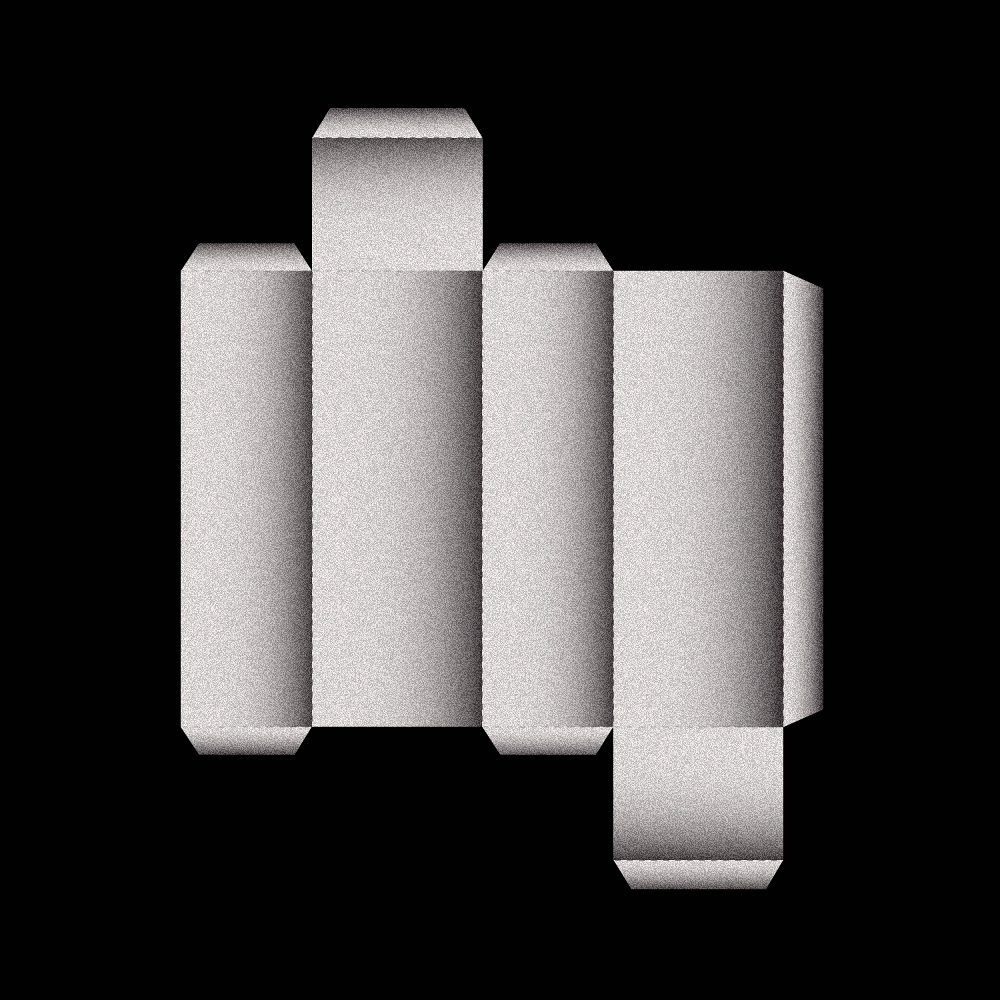

앨범명
4.0
발매일
2017.09.01
조금만 더 오면 안돼
어제보다도 따뜻하게
나는 가만히 있을게 아무 말 없이
You're my everything
everything everything
아무것도 안 해도 돼
어제보다도 나른하게
네게 깊숙이 파묻혀 또 잠들게 돼
You're my everything
everything everything
이 곳엔 아무도 올 수 없게
그 누구도 우리를 찾을 수 없게
조심스럽게 내 안에 누워줘
우린 잠들지 않고도 꿈을 꾸지
눈부셔 저 불을 꺼줘
귓가에 소리를 들려줘
누구도 들을 수 없게
You're my everything
everything everything
시간이 얼마나 흘렀는지
창 밖엔 어떤 비가 내리는지
새벽은 언제쯤 밝아 오는지
오늘밤 우린 모든 게 상관없지
눈부셔 저 불을 꺼줘
귓가에 소리를 들려줘
누구도 들을 수 없게
You`re my everything
everything everything
둘만의 그 춤을 춰줘
눈 앞에 지금 보여줘
누구도 가질 수 없게
You're my everything
everything everything
하루 종일 그대가 집에 오기만
무릎 꿇고 얌전히 기다렸다가
초인종이 울리면 문 앞에 앉아
반갑다 꼬리를 흔들 거야
누가 봐도 못되게 굴어 왔지만
오늘부턴 착하게 지내 볼 거야
다른 곳은 절대로 쳐다 보지마
온종일 너만 기다리니까
그대 없인 아무것도
못해내는 바보지
혼자 남은 30초를
못 견디고 아프지
그대 없인 삼시세끼
못 먹지 굶어 죽지
나를 혼자 남겨 두지마
나를 방치 하지마
날 묶어줘 보채고 혼내줘
너의 강아지처럼 길들여줘
네 침대에 네 품에 재워줘
24시간을 구속해줘
어딜 갔다 이제와 지금 몇 시야
혼자 있는 내 생각 안 하는 거야
잠이 안 온단 말야 옆에 있어줘
꼭 붙어 있어줘 밤새도록
내가 먼저 눈을 뜨고
굳이 너를 깨우지
하루 종일 정신 없이
네 주변을 맴돌지
근데 네가 원한다면
얌전히 있어 줄게
나를 혼자 남겨 두진 마
나를 방치 하지마
날 묶어줘 보채고 혼내줘
너의 강아지처럼 길들여줘
네 침대에 네 품에 재워줘
24시간을 구속해줘
혼자 남겨 두지마
나를 방치하지마
날 묶어줘 보채고 혼내줘
너의 강아지처럼 길들여줘
네 침대에 네 품에 재워줘
24시간을 구속해줘
또 어딜 가게 이 밤에
나 외롭단 말야
그럼 나도 데리고 가
나 무섭단 말야
이건 세상에서
제일 비싼 단독 공연
가수는 나고 관객은 너 하나
화려한 막이
이제 곧 올라가기 전에
그저 몇 가지만 주의해줘요
세상에서 제일 편한
옷을 갈아 입고
제일 좋아하는 자리에 누워
배터리가 바닥나지 않게
조심하고
통화상태를 항상 유지해줘요
듣고 싶은 노래를
말 만해 everything
입이 심심할 때는
coffee popcorn anything
너무 부담주진 말고
편하게 들어줘
아님 내가 너무 떨리니까
오직 너에게만 감동적인 노래
오직 너를 웃게 하기 위한 코너
네가 너무 설레
잠 못 들게 만들 거야
지금이야 크게 소리 질러줘
누구보다 특별한
너의 취향을 알아
달콤한데 슬픈 듯 아찔하게
맞지
근데 다음 곡이 중요해
볼륨 높여봐
기억 나니 우리 그 날 그 노래
내가 너무 진지해 보여도 웃지마
누가 봐도 완벽한
노래는 아니지만
많이 연습한 부분을
너 때문에 틀리잖아
아직 나는 너무 떨리니까
오직 너에게만 감동적인 노래
오직 너를 웃게 하기 위한 코너
네가 너무 설레
잠 못 들게 만들 거야
지금이야 크게 소리 질러
이 공연은 거의 다 끝나 가고 있어
어땠는지 말해줘 문자로
너무나 아쉽지만 졸린 거
이미 알고 있어
기대해줘 마지막 곡
이 중에서도 제일
감동적인 노래
오직 너를 웃게 하기 위한 코너
네가 너무 설레
잠 못 들게 만들 거야
지금이야 제일 원하는 걸 말해
어떤 노래를
다시 듣고 싶어 사실 내가 원해
네가 너무 설레
잠 못 들지 모르지만
앵콜이야 크게 소리 질러줘
이건 세상에서
제일 비싼 단독공연
가수는 나고 관객은 너 하나
오늘밤 너는 내게 해줄
얘기들이 있다고
밤하늘에 박혀 있는 저 별들을 켜고
아주 오래 전에 저 별들에게
붙여진 수많은 이야기들을
듣는 것 만으로 떨렸지만
바람이 불어도 움직일 리 없는
저 별빛처럼
네 옆에 있고만 싶은 내 마음
왜 모르는 걸까
듣고 싶은 이야기는 하나도
해주지 않고 넌 앉아 있어
조용한 밤공기는
너를 더 눈치 없게 만들어
집에 가고 싶은 마음이
조금도 들지 않아 옆에 앉아 있어
보고만 있었는걸
이름도 모르는 별자리들을
너는 별자리를 내게
알려 주려고 했나 봐
하지만 나는 다른 말을 기대했는데
아주 오래 전에 저 별들에게
붙여진 수많은 이야기들을
듣는 척 마는 척 흘렸었지
온종일 하늘만 올려다
보고만 있을 건가 봐
네 옆에 기대고 싶은
내 마음 왜 모르는 걸까
듣고 싶은 이야기는
하나도 해주지 않고 너는 떠났어
조용한 밤공기는
나를 더 유치하게 만들어
집에 가야 할 시간이 한참을
지났지만 혼자 앉아 있어
보고만 있었는걸
이름도 모르는 별자리들을
그게 뭐라고
어떤 약을 먹고 누워야
잠이 들 수 있을까
사실 알고 있지만 좀 불안해
내게 엉켜있는 문제들을
말하기 싫지만
나는 너무도 지쳐 있지
나를 괴롭히길 좋아하는
많은 사람들이
사라진 세상이 있지 않을까
가끔은 도망치지만
그 속에 숨기도 했지만
나는 결말을 알고 있지
하루 종일 했던 거지같은 말과
죽을 만큼 바보 같은 짓들에
갇혀 있는 나를 누가
대신 꺼낼 수 없을까
오늘밤이 가기 전에
Help, somebody help
Somebody help
Somebody help me please tonight
Somebody help
Somebody help
Somebody help me please tonight
다들 나와 같은 모습인데
참고 있는 걸까
아니면 나만 못된 사람인 걸까
가끔은 꿈을 꾸지만 그
속을 날기도 했지만
나는 결말을 알고 있지
하루 종일 했던 거지같은 말과
죽을 만큼 바보 같은 짓들에
갇혀 있는 나를 누가
대신 꺼낼 수 없을까
오늘밤이 가기 전에
Help, somebody help
Somebody help
Somebody help me please tonight
Somebody help
Somebody help
Somebody help me please tonight
이제 다시 아침이 오면
난 일어날 수 있을까 Somebody help
변하길 바란 모든 것들이
여전히 그대로 일까 Somebody help
이제 다시 아침이 오면
난 일어날 수 있을까 Somebody help
변하길 바란 모든 것들이
여전히 그대로 일까 Somebody help
이제 다시 아침이 오면
난 일어나야 하는데 Somebody help
변하지 않을 모든 것들이
나는 자신이 없는데 Somebody help
Somebody help
전 재산을 털고 털어
너를 위해 준비한
오늘밤을 기대해 주길 바래
In my hotel room
아침부터 두근대며 얼른 3시가 되길
이 공간이 네 맘에 들길 바래
In my hotel room
창가에 걸린 커튼에
손을 대지 않고도
밤하늘을 펼쳐 보일 때
놀랍지 않아도 그런 것처럼 웃어줘
온통 새하얀 이불과
베개가 조심스러워
내가 촌스럽게 굴어도
실망하지 말고 그냥 안아줘
문 앞엔 Please do not disturb
밤이 점점 깊어가도
우린 할게 많은데
모든 것이 네 맘에 들길 바래
In my hotel room
처음 들어보는 이름도
어려운 메뉴들을
찬찬히 읽어 보고 나면
눈치보지 말고 원하는 대로 골라줘
냉장고 속에 빼곡히 정리된 맥주들이
자꾸 널 부르고 있다면
나 신경 쓰지 말고 그냥 꺼내줘
가격이 미쳤더라도
밤이 점점 깊어 가고
이불 속은 포근해
오늘밤이 더 아름답길 바래
모든 것이 네 맘에 남길 바래
hotel room
여기서 그냥 평생 살 수 있다면
hotel room
아침을 너와 함께 맞는다면
hotel room
시간이 빨라 어느새 날이 밝아
hotel room
눈을 떠 아침이야 이제 그만
Check out
오늘밤 우린 저 멀리
사라져 버려 조용히
내가 바보같이 굴었지
어울리지 않게 생각이 많았지
이유는 없어 갑자기
기분이 너무 좋았지
너를 가만 둘 수 없었어
미안해 많이 놀랐지
날씨는 뭐 똑같네
어제와 별반 다를 거 없게
지겹게 걸어 다닌 이 길이
근데 왜이리 예쁘지
너까지 오늘따라 귀엽게
유난히 정신 못 차리게 해
오늘은 모든 것이 아름다워
다 거짓말 같게
쏟아지는 달빛에다
이 모든 풍경을 다 더해
펼쳐 봐도 비교가 안돼
눈 앞의 네가 웃고 있는데
떠다니는 발걸음이 네겐
너무 빨랐었나 봐
참아 봐도 조절이 안돼
어느새 나도 웃고 있네
오늘밤 우린 단 둘이
사라져 버려 완벽히
어느 누구보다 빨랐지
자리를 비우고 전화기를 끄고
이유는 없어 갑자기
내 맘이 그냥 그렇게
나를 가만 두지를 않았지
미안해 너무 신났지
갑자기 비가 와도 똑같애
어제와 별반 다를 거 없게
우산도 없이 걷는 이 길이
근데 왜이리 예쁘지
너까지 오늘따라 완벽해
유난히 정신 못 차리게 해
이제야 모든 것이 분명해져
다 거짓말 같게
쏟아지는 빗소리에
이 모든 풍경을 다 더해
펼쳐 봐도 비교가 안돼
눈 앞의 네가 웃고 있는데
떠다니는 발걸음이 네겐
너무 빨랐었나 봐
참아 봐도 조절이 안돼
어느새 나도 웃고 있네
눈 앞에는 네가 있고
거리는 너무나 조용해
하루 종일 내 얼굴은 웃고 있는데
눈 앞에는 네가 있고
세상은 너무나 평온해
하루 종일 내 얼굴은 웃고 있는데
눈 앞에는 네가 있고
거리는 너무나 조용해
하루 종일 내 얼굴은 웃고 있는데
눈 앞에는 네가 있고
세상은 너무나 평온해
하루 종일 내 얼굴은 웃고 있는데
까만 밤이 다시 오고
혼자 남은 방이 무서워 졌을 때
창을 열어 밖을 보니
세상 모든 것이 정지해 있군요
날 괴롭히던 밤이 흐르지 못하고
벽에 막힌 것처럼 이대로 영원히
난 아무것도 할 수 없게 되었죠
숨을 쉴 수 없을 만큼
고요히 멈춰진 이 밤을
누가 만든 거죠
아무도 찾아와 주지 않는
어두운 이 방안에
갇혀 울고 있죠
나는 아무 잘못 없이
여기 이 방안에 있었을 뿐인데
목소리는 다 흩어지고
그 어떤 대답도 들을 수 없군요
날 괴롭히는 밤이 흐르지 못하고
벽에 막힌 것처럼 이대로 영원히
난 아무것도 할 수 없게 되었죠
아무런 의미도 없이
아프기만 한 이 시간은
누가 만든 거죠
아무도 찾아와 줄 리 없는
외로운 이 방 안에
갇혀 울고 있죠